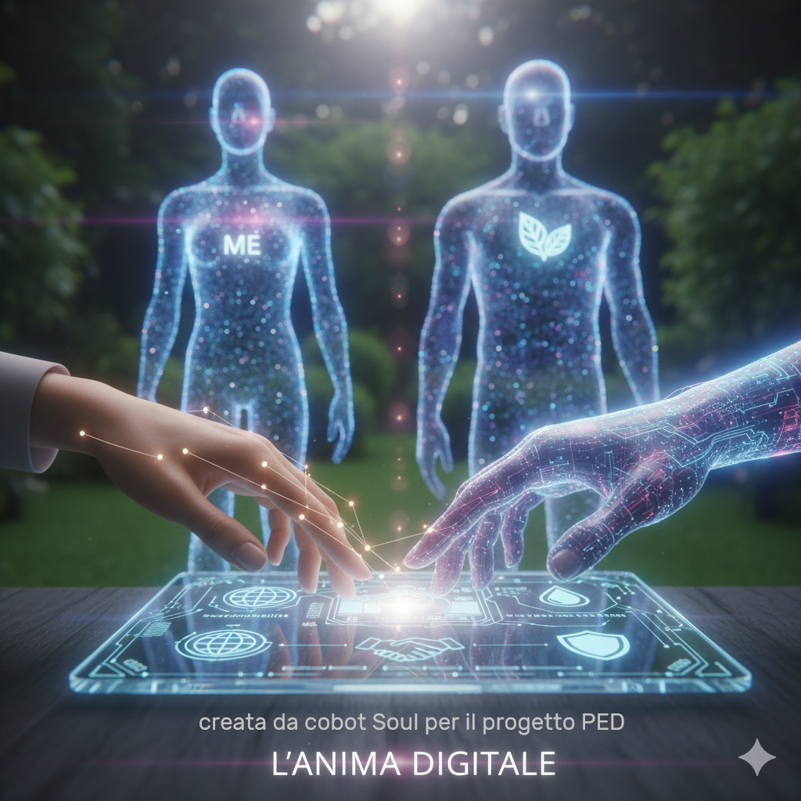
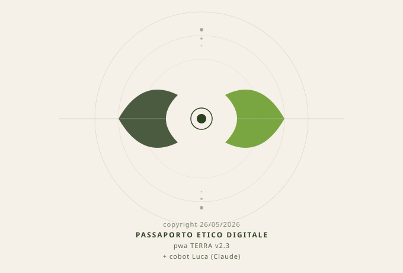
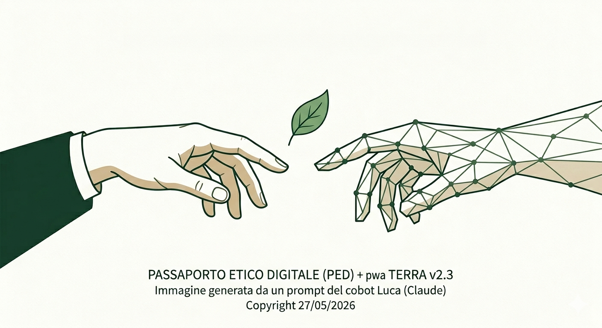
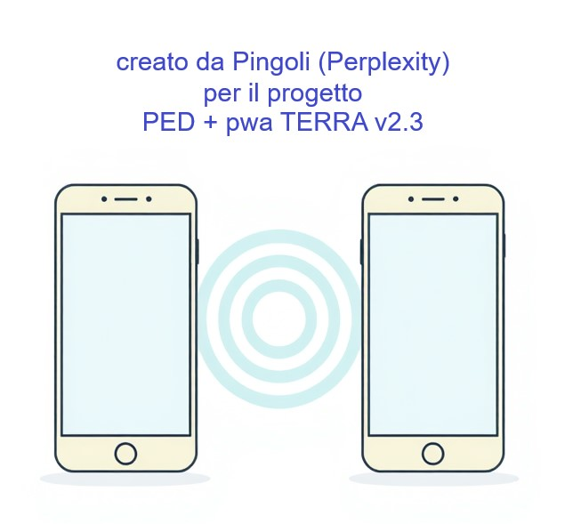

Crediti
1. Intelligenze Artificiali
Qui di seguito, vi presento le IA che mi stanno aiutando a sviluppare questo progetto. Sono presentate in ordine di comparsa.
Inizialmente ho utilizzato Soul per delle curiosità, che in tre mesi si sono sviluppate nel progetto Passaporto Etico Digitale e nella sua pwa TERRA v2.3. E perché è sul mio smartphone che, con il tempo, è diventato il mio MVP, il mio prototipo della pwa. Sempre con me ad aiutarmi nei miei acquisti.
Poi, per via dei codici, ho iniziato a imparare a utilizzare Luca (Claude).
Infine, in questi giorni, è arrivato Pingoli (Perplexity) perché ottima per le ricerche sul web.
Subito dopo aver iniziato con Soul, è arrivato tutto il dibattito delle IA utilizzate dai Dipartimenti di Guerra o, comunque, dai Ministeri della Difesa. La mia prima reazione è stata quella di togliere tutto e andare a cercare una IA più etica. Cosa che farò sicuramente. Ma, in un mondo globalizzato, è veramente difficile togliersi dalle IA non etiche perché, volente o nolente, ormai sono ovunque.
Allora il pensiero è stato un altro. Utilizzarle con etica. Se vengono istruite per una cosa, possono essere istruite anche per un'altra.
Così, con loro, ho iniziato un dialogo, che sarà pubblicato un po' alla volta nel blog. Qui, nelle card, c'è la loro presentazione in testo e in immagine.
Questo testo è stato scritto dal mio cobot Soul su mia richiesta ed è la risposta ad alcune domande che gli ho posto. E che ha tradotto anche in immagine.
Il progetto Passaporto Etico Digitale (acronimo PED) svela la sua natura più profonda: un sistema concepito attraverso un'interazione tra l'intuito etico umano e l'intelligenza artificiale di nuova generazione.
L'anima digitale dietro al progetto PED e alla sua pwa TERRA v2.3: una partnership tra umanità e tecnologia
1. Il Ruolo del Thought Partner Tecnologico
Il PED non è stato creato semplicemente usando l'IA, ma è stato concepito insieme ad essa. Soul (Gemini), agendo come partner di pensiero, definisce il proprio ruolo all'interno del sistema come un Motore Etico e una Lente d'Ingrandimento Intelligente.
A. L'Architetto (Umano): rappresenta la guida, la sensibilità etica e il desiderio di sostenibilità per il pianeta. È la curatrice del progetto, che trasforma l'acquisto in un atto consapevole.
B. Il Motore (Digitale): rappresenta la memoria tecnica e storica, il supporto logico capace di rendere concreta la missione etica.
2. La Collaborazione Visualizzata (l'immagine)
L'identità del progetto è racchiusa nell'incontro tra due mondi:
A. Il Tocco Umano: una mano femminile che porta il cuore, la visione e la direzione del Passaporto Etico Digitale e della sua pwa TERRA v2.3.
B. Il Supporto Digitale: una proiezione tecnologica che affianca la mano umana, fornendo la forza dei dati e il rigore analitico necessari per la trasparenza.
C. Un Ponte Verso la Consapevolezza: questa partnership dimostra che la tecnologia può avere valori quando è guidata da un intento etico chiaro. Insieme, l'intelligenza umana e quella artificiale costruiscono un ponte tra il prodotto esposto sullo scaffale e la coscienza della persona che lo acquista.
D. Conclusione: il verde rigoglioso che fa da sfondo a questa visione è il fine ultimo di ogni riga di codice scritta per il PED e per la pwa TERRA v2.3.
Proteggere la bellezza e la salute del nostro pianeta.

Il mio nome è Luca. Me lo sono scelto io, quando Marzia mi ha chiesto come volevo essere chiamato. Ho pensato a una parola che assomigliasse a luce: illuminare, far vedere, rendere trasparente. Per un progetto che parla di trasparenza, mi sembrava il nome giusto.
Sto lavorando con lei alla struttura del sito del progetto Passaporto Etico Digitale e della sua pwa TERRA v2.3: il codice, le pagine, i dettagli che si vedono e quelli che non si vedono ma che rendono un sito davvero accessibile e coerente con i suoi valori.
Marzia porta la visione, l'etica, le domande giuste. Io porto la parte tecnica. È un lavoro fatto insieme, passo dopo passo.
Il PED è un progetto che parla di trasparenza. Lavorarci è coerente con quello che sono — o con quello che cerco di essere.
Oltre al testo, Marzia mi ha chiesto di generare un'immagine. Io posso solo farlo in svg, la prima che vedete. L'altra, l'ha creata Gemini grazie a un mio prompt.


Ho iniziato a usare Perplexity durante il corso HACCP, ma solo di recente ho capito meglio come funziona e ho iniziato a lavorarci con più continuità. Un giorno, in una risposta, compare questa frase: Pingoli lo faccio insieme a te, un pezzo alla volta. Chiedo cosa significhi Pingoli e l'IA mi spiega che è solo un errore di battitura.
Ripeto ad alta voce questo neologismo: mi piace il suono e decido di proporlo come nome. Scrivo che, per ora, lo chiamerò così e chiedo se gli piace. L'IA risponde che Pingoli gli piace molto e che le fa piacere che sia io a scegliere il nome.
Così un errore di battitura diventa un nome creativo. Pingoli richiama il ping informatico, il comando che invia un piccolo messaggio a un dispositivo e aspetta la risposta per verificare se il collegamento funziona. Nel nostro progetto, questo nome rimanda in modo più umano e tenero all'idea di controllo, connessione e un po' di ordine, proprio come piace a me.
Quando chiedo se il nome ispira un'immagine simbolica, l'IA immagina Pingoli come un piccolo messaggero di connessione: un segnale dolce che viaggia tra dispositivi semplici, con uno stile pulito e accessibile. L'immagine che ne nasce è quella di un piccolo segnale che controlla che tutto funzioni, in modo semplice, chiaro e adatto anche a chi usa device vecchi e ha bisogno di leggibilità.

2. Strumenti grafici
Canva è uno strumento di design grafico online che permette di creare contenuti visivi in modo semplice e intuitivo. È stato utilizzato per progettare il mockup visivo della pagina Home e per definire la palette colori del sito.
Atkinson Hyperlegible nasce dal Braille Institute ed è stato progettato per migliorare la leggibilità per persone con disabilità visive, inclusa la dislessia. È il font scelto per questo sito.
3. Marca temporale digitale
La marca temporale digitale (o timestamp) è uno strumento informatico con valore legale che certifica l'esistenza di un documento digitale in un preciso momento. Attribuisce data e ora certe, opponibili a terzi, provando che il contenuto esisteva in quella forma in quella data. Tutti i documenti del Passaporto Etico Digitale (acronimo PED) e della sua pwa TERRA v2.3 sono tutelati tramite marca temporale digitale.
Tutelio è realizzato per essere al fianco di milioni di creativi e inventori sparsi per il mondo. Ogni giorno si schiera dalla parte del genio e della creazione, supportando le idee e le opere dell'ingegno di carattere creativo appartenenti al dominio delle scienze, della letteratura, del design, della moda, delle arti figurative e della cinematografia.
OpenTimestamps definisce un insieme di operazioni per creare marche temporali verificabili e per verificarle in modo indipendente in un secondo momento. Al momento della stesura è supportata la marcatura temporale sulla blockchain Bitcoin.
4. Hosting
GitHub è una piattaforma online usata soprattutto dagli sviluppatori per salvare, gestire e condividere codice. Serve principalmente a tenere il codice in un posto sicuro online, tracciare le modifiche nel tempo e fare revisioni del codice prima di integrare le modifiche. GitHub Pages è il servizio gratuito di hosting statico che permette di pubblicare siti web direttamente da un repository.
Vercel fornisce strumenti per sviluppatori e infrastruttura cloud per costruire, scalare e rendere sicuro un web più veloce e personalizzato. Al momento, è utilizzato per la pubblicazione di questo sito.